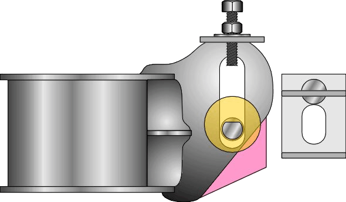

-
Mine was more negative on the drivers side actually. I believe this is a result of the fabrication of the plates and their angles. Nothing appears to be bent."produce first.talk second." -
Interesting! I wish we could get some more input from those who have performed this upgrade. Mark has great praise of the K-mac replacement bushings for the control arms. I might have to order a set of these.2006 & 2007 Basketball National Champions! 2005, 6, & 7 Basketball SEC Champions! 2006 Football National Champions! 2006 Football SEC Champions! 2008 SEC Champions! 2008 Football National Champions! First University in history to capture three titles in a single year! I was there at all of them, and it was awesome! Go Gators! -
ive done this modification twice and i have a few comments.. if you have stock springs and you just want adjustable camber then do exactly what gary has described. dont even worry about elongating the plate. if you have it welded up straight then you will be able to get the alignment in spec. as far as alignment goes, if you do not get the new slot PERFECTLY perpendicular to the top surface of the crossmember then you will never get camber or toe into spec. that plate has to be welded perfectly in position. if you have lower springs in the car then i suggest a slight change in positioning. in garys diagram the top of the slot in the new plate alignes with the top of the existing hole. i set it up so that the slot in the new plate covered the top two thirds of the existing hole. my adjustability range for rear camber is a little more that 1 to a little more than 2. for the people that are having problems, compare the left to right measurements of your rear crossmember… just pick a few point and measure. i guarantee that you will find irregularities. ive seen 2 rear crossmembers that were bend.. it was hardly noticable, but it was bent enough to make a difference. -
Here's my hack attempt!!! I think Butter tried this before (weld 1/4" key stock)?CAG8OR wrote: I wish we could get some more input from those who have performed this upgrade.
Do you think I have enough adjustment for 1.5" drop springs?
I'll have to put this on the alignment rack to see my full range of adjustment!
-
i dont think you really get how the eccentric bolts work.. the adjustment range is FIXED. the slot can only be as long as the eccentric allows for. you can shift this range positive or negative depending on where you cut the slot. you setup is incorrect, the squarebar should be touching the washer at all times, forming a cage that the bolt and washer rotate inside. you're setup is very unstable and probably dangerous. -
if the slot is only vertical and tight to the bolt, then most of the load will be sent into the frame, the eccentricity won't help in any way but would not hurt anything eitherChris86NA2T wrote: i dont think you really get how the eccentric bolts work.. the adjustment range is FIXED. the slot can only be as long as the eccentric allows for. you can shift this range positive or negative depending on where you cut the slot. you setup is incorrect, the squarebar should be touching the washer at all times, forming a cage that the bolt and washer rotate inside. you're setup is very unstable and probably dangerous.
what's the worst that can happen, he hits a set of hard bumps and it moves a bit throwing his camber off again -
G-E has a pretty good point here, but Chris is correct in that the setup is made incorrectly. As long as you use the inside "knurled end" bushings on the outers, I think all you would need is a long vertical slot and secure them with the original bolt and nut. Just make sure to keep the slot the correct width and perfectly vertical. There is no need for the eccentric bolt using this method. Simply knock it into place with a rubber mallet and torque it down. I don't think it will move either. My friend had his like this for a very long time and it never went out of alignment after being set. It is not the correct way to do this, but effective none the less.2006 & 2007 Basketball National Champions! 2005, 6, & 7 Basketball SEC Champions! 2006 Football National Champions! 2006 Football SEC Champions! 2008 SEC Champions! 2008 Football National Champions! First University in history to capture three titles in a single year! I was there at all of them, and it was awesome! Go Gators! -
I have been looking over this problem a little and I think I have an idea that might help give a little more adjustment room, but will still let you use the eccentric bolts.
My idea is to cut a block that is .605in that can go above or below the bolt to in theory keep the travel the same as the original, but you will be able to shift it down to give more adjustability. It should allow for about .85in of travel overall which might help get everything into spec. I came up with this number by subtracting the bolt dia. and the small edge of the "washer". This came to .755in, which I then subtracted from 1.36in to give .605in which should be the amount needed for a spacer.
I am at work right now so I can't do any pictures of what my idea is, but I will try to draw some up soon and post them that way if any of this doesn't make sense. This sounds like it might work but I have no experiance with this yet because I am trying to plan out everything I am going to need and want when I do my suspension overhaul.
EDIT:
I realized just now that I diidn't seem to explain that right, or it just sounds weird when I re-read it. To try and add some form of visual picture to this I will try to explain it a little more by using the original adjustment plates.
Basically, I would be making two of the plates that allow for .425in of adjustment. I would overlap them on the bottom to where the lowest point of the top bracket and highest point of the bottom bracket (I would be over lapping the center points of the bolts to allow for an overall travel of .850in). The .605in shim would cover up the area that is not used at the top or the bottom.
Again, once I draw something up and am able to get it on my computer I will post it. This idea is similar to the one I believe Gary had which allowed for 1in of travel and had a piece of metal that could be slid left to right to push the bolt down (I believe his CAD drawing is at the end of the 2nd page). -
I had a quick question about mapp gas and thought I would post it here since I am going to use it for the camber plates. I don't have a cutting torch and I was wondering if any of you guys have had experiance with mapp gas to get steel red hot. I am needing something to heat up the steel plate so I can beat the crap out of it with the sledge hammer and don't have the money to a cutting torch, but I can get one of those little mapp torches. Thanks a lot and I will keep everyone posted on how the plates turn out and if they work… I might even make a second set if someone would like so we can see if they will give enough adjustment since I won't be able to do my suspension work until atleast Feb or so. Thanks.
Chris -
Well I have been reworking my design since my last post once I was able to get more info from Gary. My new thought has been to bolt the spacer on from the top that way it would not interfere with CA. The slot for the bolt travel is twice as long as Gay's original design so you get approx. .85 inches of adjustment. The spacer is made from 1/2 inch flat stock with a hole drilled and tapped so it can be bolted on from the top. This spacer can be removed from bracket so the top portion of travel can be used or bolted on if additional adjustment is needed. This bracket is not perfect because I had to improvise a few things but I didn't care since this was just a demo. Here are the pictures of the bracket and let me know what you think.
-
p_bagnano,
Where wanting more information on the pictures I posted?
The plates where made out of 1/8 x 2inch flat stock that was cut to 3 inches if I remember correctly… I am at school right now so I don't have the exact specs on them right now. Then I bent a 3/4 inch section over to form the top flange, and measured down approx. 1.785 inches to allow for the travel and bent the excess over to form the bottom lip. This design is based off of Gary's original design but I added an additional .425 inches of travel and changed the top lip to 3/4 in. Also, these can/should be cut down from a 2 inch width to make a symmetrical plate. This may not be necessary but it would prevent any mix up when drilling/installing the plates. If there is intrest in these I will give Gary all of my specs and he might be able to draw up something in CAD.
If there are anymore questions feel free to ask and I will try to clear anything up.
Chris -
Cool, I glad you came up with a real solution from our conversation.
 -
That is an awesome idea Gary. Many props to you for spending the time and effort to work this out. FYI I had done the typical move the hole down mod to fix the camber with my springs when I put them in. The initial new hole wasn't enough to fix my camber past -2.5 in the rear so I slotted the hole more down which help. It has been that way for about 9 years now. I normally look the car over every oil change. I recently had to take my wheels off and noticed that my LR control arm had shifted back up to the original position since my last oil change 2k miles ago :shock:. My only concern with moving the hole as far down as you have it drawn is the stress it's putting on the inner control arm bushing. I have seen on a bmw spherical bearings used in the control arms to help with any binding issues.89 Black Z 5spd, tokico hp, msa springs, k&n cone, dynomax racemagnum muffler, stanza tb. -
okay so i am confused, could you just have cut out or enlarge the stock camber plates to take larger bolts and have the space for more adjustment? the way i see it you could have just jigged out or bored out the factory adjustment hole. i was wondering if that would work my self because i am sick of a full inch on the out side of my tires almost never touching the ground after i lowerd it 1.5" front and rear, the alignment shop adjusted the front fine, but they said the back was as good as they could get. would this work or am i over looking some thing?"The Nail That Sticks Out Gets Hammered" -
Yes, RedZ31, you could do that but you'd end up with the same problem that
JimmyZ89 mention above and as quote below.
JimmyZ89 wrote:- snip- I recently had to take my wheels off and noticed that my
LR control arm had shifted back up to the original positionsince
my last oil change 2k miles ago :shock:. - snip-

Copyright © 2006–. All rights reserved. Privacy Policy